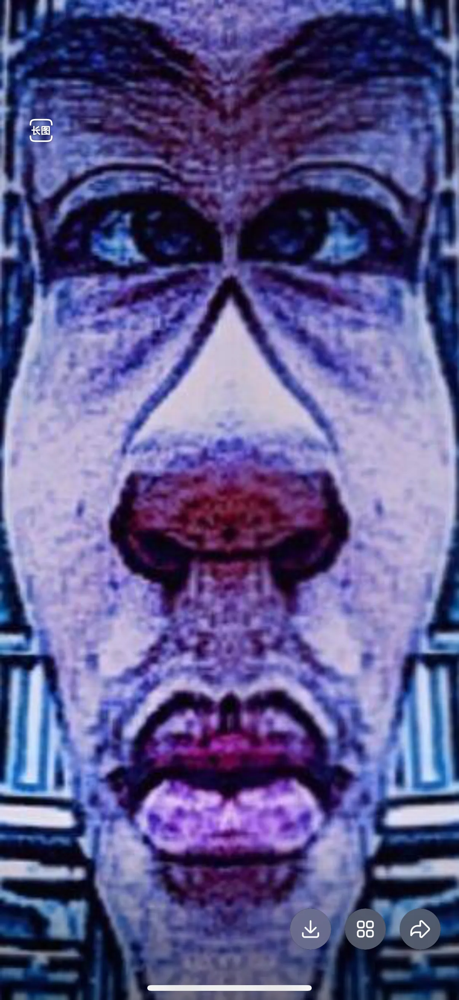
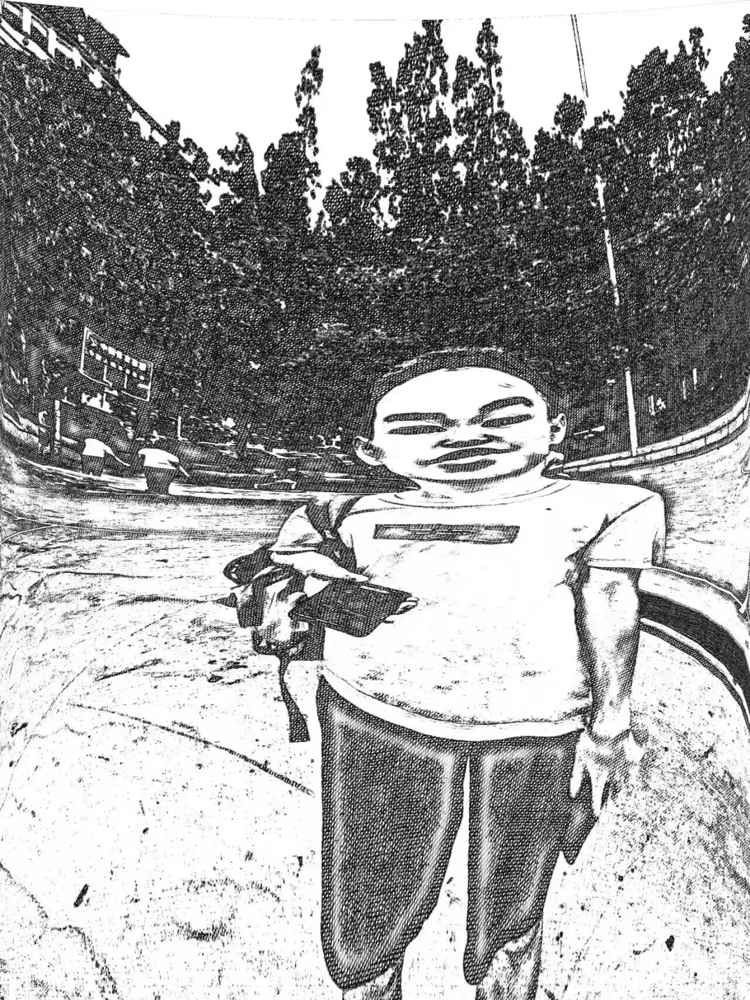

O
L
D
·
P
O
K
É
D
E
X
Old Pokémon Pokédex
老可梦图鉴
≡
首页
图鉴
事件时间线
关于我们
更新日志
联系我们
CLASSIFIED
SECTOR 07 · SUBLEVEL ARCHIVE
深耕志怪领域，只为向世界展现猎奇与未知
FILE NO. 000 · OLDPOKEDEX.ARCHIVE
Item #
000
Object Class
THAUMIEL
Clearance
LEVEL 3
Status
ACTIVE INCIDENT
档案 #001 · 解密中
0
疯狂年
0
因调查死亡人数
0
完成项目
档案解密进度
读取本机记录中…
档案 #002 · 待归档
全部
远古恐惧
未知之厄
人类希望
狞笑之杰

青花瓷

青鬼
反常
档案 #003 · 活跃
远古恐惧
人类历史上的恶魔。
未知之厄
灾难发起者。
人类希望
反抗阵营。
档案 #005 · 异常追踪
全球异常监测网
实时捕捉正在发生的未知事件。点击信号点可接入现场。
河源实验中学
益和花园
文化广场
万隆城
沃尔玛
坚基
档案 #004 · 待接收
加入我们
发送
↑